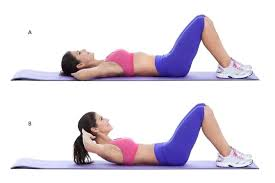
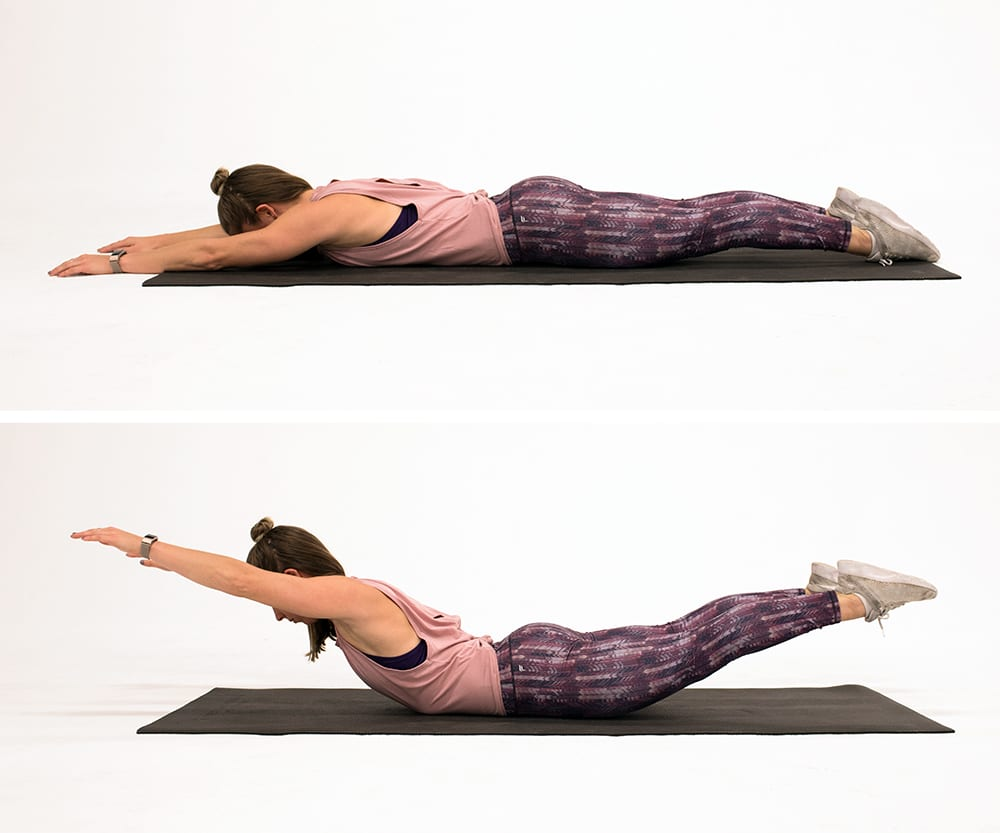
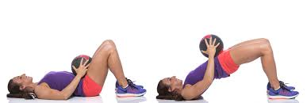
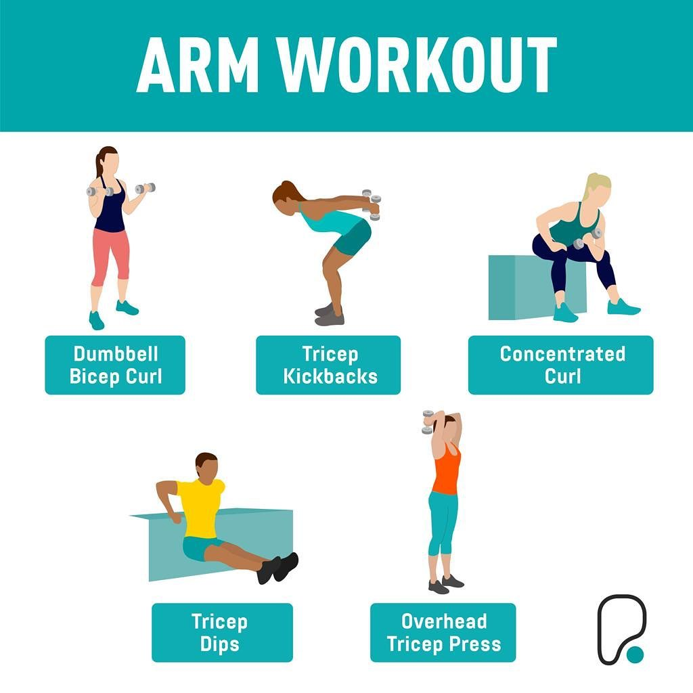

Exercises for overweight person

1.Partial crunches
Partial crunches are an effective choice for the abdominal muscles while applying less stress on the lower back.
Lie on your back while bending your knees and place your feet flat on the floor.
Place your hands behind your head or crossed on your chest. Engage your core and lift your shoulders off the ground, and try to touch your elbows to your knees.
You must exhale as you lift up and inhale as you lower yourself back down.

2. Superman Exercise
The Superman exercise is a good exercise for overweight people. It strengthens the back muscles and improves posture.
To do the superman exercise, lie down on the floor with your face down and arms extended in front of you.
Lift your chest, arms, and legs off the ground simultaneously. Hold the position for a few seconds and gently lower yourself down.
Repeat in sets and gradually increase them as you become more comfortable.

3.Glute Bridges
Glute bridges are ideal exercises for activating and strengthening the gluteal muscles, which can often be weak for those who have obesity.
Glute bridges can be performed by lying on your back with your knees bent and feet placed flat on the floor. Lift your hips off the ground until your body forms a straight line from your knees to your shoulders.
Hold for a moment and slowly lower back down. Repeat it while focusing on squeezing your glutes.

4.Bicep Curls/ Tricep Curls
Bicep curls and tricep curls are a form of resistance training exercises that build muscle and increase overall strength. They are simple yet effective that target your arms.
You can use dumbbells to perform these exercises. Start with a weight that challenges you but allows you to maintain proper form.
Focus on controlled movements and gradually increase the weight as you keep learning.